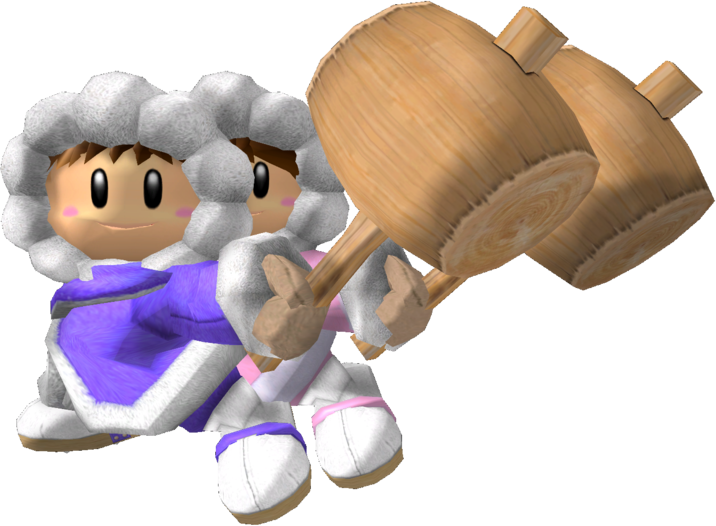

|  | Ranked 7th of tier list : ICE CLIMBERS |
| Weight | |
|---|---|
| 15th heaviest | |
| Shield stats | |
| Roll lenght | 13th longest |
| Shield size | 18-20th biggest |
| Grab range | 17th longest |
| Wavedash lenght | 2nd longest |
| Movement stats | |
| Walking speed | 18th fastest |
| Turning speed | 10th fastest |
| Running speed | 16-20th fastest |
| Aerial stats | |
| Jump squat | 4 frames (1st fastest) |
| Short hop | 25th highest |
| Aerial speed | 23rd fastest |
| First jump height | 7-8th highest |
| Seconde jump height | 11th highest |
| Total jump height | 1st highest |
| Average fall speed | 19th fastest |
| Fast falling speed | 21-24th fastest |
| Falling speed | 19-21st fastest |
| Ledge stats | |
| 0-99% ledge roll | 19th longest |
| 100%+ ledge roll | 18th longest |
| 0-99% ledge attack range | 20th farthest |
| 100%+ ledge attack range | 12th farthest |
| Intangible ledgedash (Optimal) | 13 frames |
| Notable players | |
| Wobbles, DizzKidBoogie, ChuDat, Fly Amananita, Nintendude | |
| Smashboard forum | |
| http://smashboards.com/forums/ice-climbers.83/ | |
Ice Climbers rank 7th on the tier list (in the B tier), highly accredited to the usage of Wobbling and Desyncing and the fact that the fighter is literally "two-in-one", which helps the climbers rack up damag, combo, and KO opponents; this gives the Ice Climber's one of the best grab games in Melee. Additionally, good players can quicly rack up damage with the two, and they have good approach options on the ground, due to disjointed hitboxes and two decent projectiles. The two also have a very long and floaty wavedash, aiding their appoach tremendously. The Ice Climbers, however have a poor air game, and their floatiness causes them to be vulnerable to juggling and combos. Another vulnerability is that many of their benefits are lost if the second Climber is KOed.